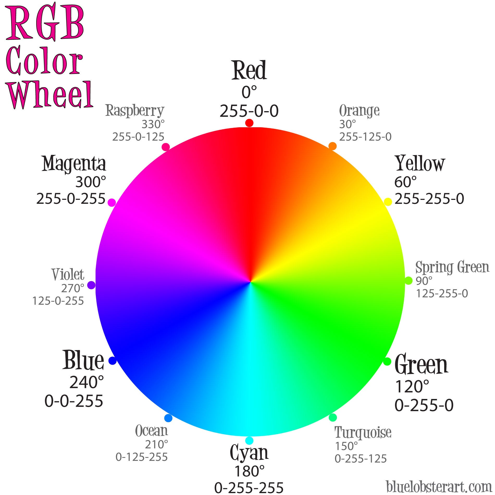
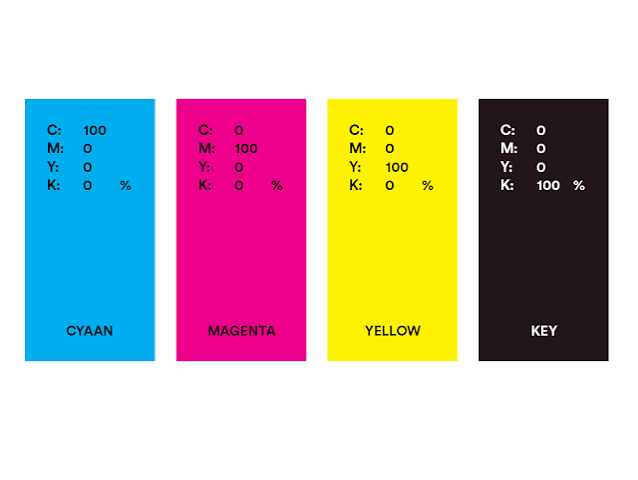

Een kleurmodel is een systeem waarmee kleuren digitaal worden weergegeven. Computers, telefoons en andere digitale apparaten gebruiken kleurmodellen om kleuren op te slaan en weer te geven. Een bekend kleurmodel is RGB. RGB staat voor Red, Green en Blue. Met deze drie kleuren kan een scherm veel verschillende kleuren maken. Elke kleur heeft een waarde voor rood, groen en blauw. Deze waarden liggen meestal tussen 0 en 255. Als alle waarden 0 zijn, krijg je zwart. Als alle waarden 255 zijn, krijg je wit.

Een ander kleurmodel is CMYK. Dit wordt vooral gebruikt bij printers. CMYK staat voor Cyan, Magenta, Yellow en Key (zwart). Met deze vier kleuren worden verschillende kleuren op papier gemaakt. Het verschil tussen RGB en CMYK is dat RGB vooral wordt gebruikt voor digitale schermen en CMYK voor afdrukken. Daarom kan een kleur er op een scherm anders uitzien dan op papier.
